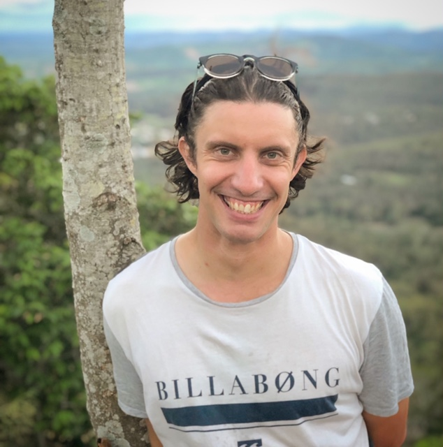
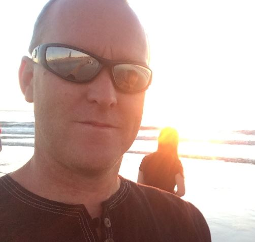
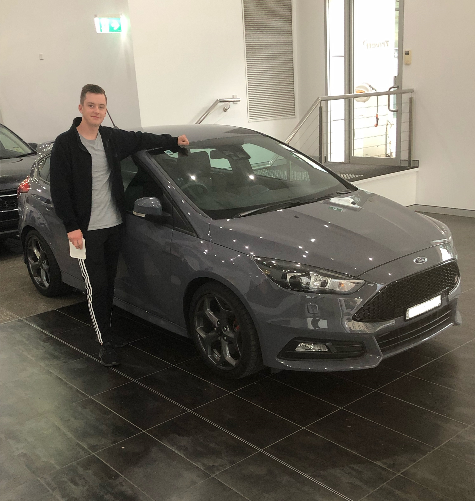

We all would like to welcome you to our website for Assessment 2. Our group name chosen by Matt and Jason after a long discussion about copyright laws about a certain TV show, is The IT Shroud, which is also names after a famous Counterstrike gamer. Firstly, we would like to introduce ourselves.

My name is Matthew Andrews. I was born in Australia, where all of my English-speaking family have lived for many generations. I grew up mostly in Brisbane, Queensland where I attended several different schools due to my father moving between jobs. Before taking this course with RMIT through Open Universities Australia, my highest level of education was grade 10 with Brisbane School of Distance Education. My distance education was due to the amount of hobbies I had when I was young. I rode horses, played drums, created electronic music on sound-cloud, skated and raced road bikes (pedal power)- which I still do to this day competitively.

I was born in Adelaide Australian, my father is Australian and my mother is Dutch. I have worked in the construction industry for my whole life so far after studying construction at Tafe. I was an active life saver in my younger days and an Australian National Kayak champion at age 14. I’m happily married with two children and enjoy spending all my spare time with them.
I was born in Sydney Australia and unfortunately only speak English. Besides tertiary education, I work full time at a media production company at Fox Studios Australia- it encompasses a lot of my time which led to me only partially completing a bachelor of business at UTS. However thanks to RMIT’s remote learning program I have been able to work my studies around my schedule more effectively and can continue to work full time and study.

I live in Western Sydney, Australia where I was born bred. I am a throrough Australian and can only speak English. I graduated year 12 in high school in September of 2018 before having completed my HSC and had original plans to study either Construction Management or Information Technology at Western Sydney University before I was offered a job as an IT assistant role in a Catholic club which helped in me making my decision. I learnt about RMIT remote learning program and knew this is what I need to gain the expereince in the field and me able to study. I enjoy playing video games on many different platforms, mainly Xbox, which is where my first interest in IT began. I also enjoy working on cars and watching the footy (Rugby League) where I follow the West Tigers. One interesting fact about me is that I almost made it into the Paramatta Rugby League team when I was 16 years old and Rugby League was a first choice career option.